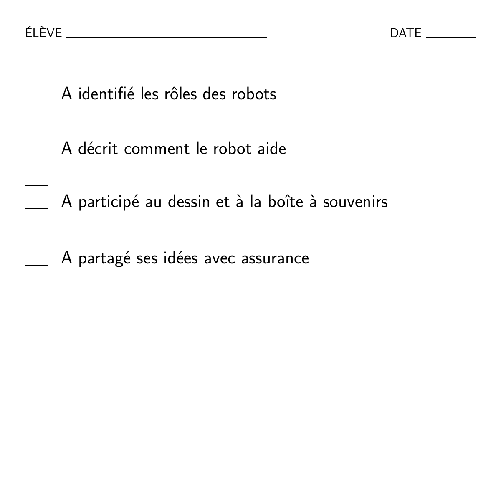

Comment l’IA apprend et résout des problèmes
Dans cet atelier, les enfants de 4 à 7 ans exploreront le monde des robots et de l’IA. Ils découvriront que les machines sont des outils utiles, mais qu’elles ont besoin de personnes pour leur apprendre et leur donner des instructions.
Ressources et téléchargements
Téléchargez les versions PDF de ce scénario ou les annexes associées.
Documents de travail modifiables
Ces fichiers modifiables sont proposés comme documents de travail pour les enseignants.
Public cible : 4 à 7 ans
Durée de l’activité : 2,5 à 3 heures (format modulaire)
Principaux objectifs pédagogiques :
- Comprendre l’IA : Voir l’IA comme un outil utile, et non comme de la magie.
- Humains et machines : Comprendre que les robots ont besoin de personnes pour les aider à apprendre.
- Curiosité : Découvrir des exemples concrets d’assistants utilisant l’IA : aspirateurs robots et enceintes connectées.
- Créativité : Imaginer et dessiner son propre robot assistant.
Résultats d’apprentissage
Les élèves seront capables de :
CONNAISSANCES ET COMPRÉHENSION :
- Commencer à comprendre ce qu’est un robot ou un assistant utilisant l’IA.
- Comprendre que l’IA peut aider à accomplir des tâches, mais qu’elle a toujours besoin de personnes.
- Découvrir des exemples concrets de l’utilité de l’IA.
COMPÉTENCES ET APTITUDES :
- Raconter des histoires et discuter de la technologie.
- Participer à des jeux de rôle guidés pour comprendre comment les robots suivent des instructions.
- Dessiner et faire preuve de créativité pour exprimer ses idées.
ATTITUDES ET VALEURS :
- Développer la curiosité à l’égard de la technologie.
- Réfléchir aux différences entre les humains et les machines.
- Considérer l’IA comme un outil à utiliser de manière responsable.
Dimension européenne / lien avec Erasmus+
- Culture numérique dès le plus jeune âge : une introduction pertinente aux concepts technologiques.
- Esprit critique : Encourager les enfants à se demander : « Un robot peut-il faire cela ? »
- Inclusion : Utiliser des exemples familiers pour rendre la technologie accessible à tous les enfants.
1. Ressources et outils
Matériel nécessaire :
- Marionnette ou robot jouet.
- Cartes à imprimer : « Le robot devine juste / se trompe », « Les humains savent mieux ».
- Papier à dessin et crayons.
- Vidéo : les robots dans la vie quotidienne.
- Grille d’observation (voir ci-dessous).
Liens utiles :
Supports pédagogiques :
- Utilisez une grille d’évaluation simple, une marionnette ou un robot, et Padlet ou un autre tableau pour recueillir les réflexions finales des enfants.
2. Méthodes de travail
- Narration : « Le robot qui s’est trompé ».
- Jeu de rôle guidé : Mimer les tâches des robots.
- Dessin et créativité : Concevoir un robot assistant.
- Réflexion collective : Discussions en cercle.
Vue d’ensemble des activités
| Phase | Durée | Activité | Description |
|---|---|---|---|
| Introduction | 20 min | Lecture d’une histoire | « Le robot qui s’est trompé » : Discuter des raisons pour lesquelles le robot s’est trompé (par exemple en mettant des chaussures au réfrigérateur) et de l’aide apportée par les humains. |
| Recherche | 20–30 min | De véritables assistants utilisant l’IA | Vidéo et vote : Regarder des vidéos de robots (aspirateurs, livraison). Voter : « Un robot peut-il faire cela tout seul ou a-t-il besoin d’une personne ? » |
| Création | 30–40 min | Robot assistant et dessin | Jeu de classement : Cette tâche est-elle destinée à un robot, à une personne ou aux deux ? Dessin : Inventer son propre robot assistant. |
| Réflexion | 20 min | Discussion en cercle | Présenter les dessins. Discuter : « Que peuvent faire les robots ? Que font les humains le mieux ? » |
3. Introduction et motivation
Histoire : le robot qui s’est trompé
Objectif : Éveiller la curiosité et montrer que les robots ont besoin de l’aide des humains.
- L’amorce : L’enseignant présente une marionnette robot qui veut aider, mais se trompe.
- L’histoire : Le robot essaie de nettoyer la cuisine, mais utilise du shampooing à la place du savon ! Il met les couverts au congélateur et le lait dans le placard.
- Discussion : « Pourquoi le robot s’est-il trompé ? » « Pourquoi les humains savent-ils mieux ? »
4. Recherche et apprentissage
Découvrir de véritables assistants utilisant l’IA
Vidéo : Regarder « SciShow Kids: Robots Helping Humans » (ou une vidéo similaire).
Discussion :
- « Avez-vous déjà vu un aspirateur robot ? Peut-il retrouver vos chaussettes perdues ? » (Non, il ne fait que nettoyer.)
- « Une enceinte connectée peut-elle vous faire un câlin ? » (Non, elle peut seulement jouer de la musique.)
Activité : Présenter des cartes illustrant différentes tâches. Les enfants votent en levant ou baissant le pouce : « Un robot peut-il bien faire cela ? »
5. Mise en pratique créative
Activité : robot assistant ou tâche humaine ?
Jeu de classement : L’enseignant présente des cartes de tâches (par exemple « Ranger la chambre », « Faire un câlin », « Peindre un tableau »). Les enfants se déplacent vers les coins de la salle portant les indications Robot, Personne, ou Les deux.
Dessin : concevez votre robot
Les enfants dessinent un robot qui aide quelqu’un à accomplir une tâche utile.
- Question : « Que fait bien votre robot ? » (Par exemple, porter des objets lourds.)
- Question : « Pour quoi a-t-il besoin d’aide ? » (Par exemple, savoir où aller.)
6. Réflexion et évaluation
Discussion en cercle
Les enfants présentent leurs dessins. La classe crée une « boîte à souvenirs » en y ajoutant des dessins montrant comment l’IA les a aidés aujourd’hui.
Grille d’observation
Les enseignants peuvent utiliser cette grille simple pour observer la compréhension :


Cette œuvre est mise à disposition selon les termes de la Licence internationale Creative Commons Attribution 4.0.